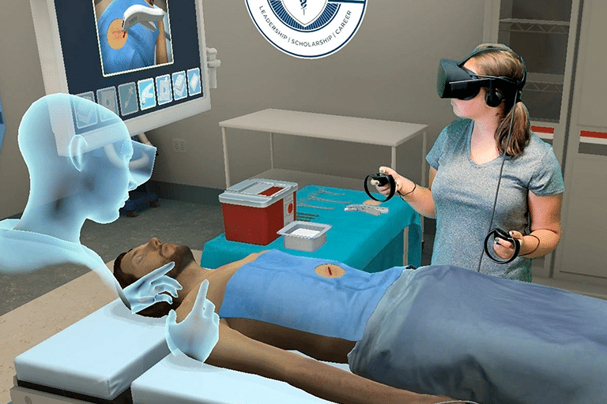

05 : Veille Technologique
Les principaux outils de ma veille
Pour effectuer ma veille technologique, j'utilise Google Alertes, qui me crée des alertes toutes les semaines. Également grâce aux newsletters telles que Feedly, un agrégateur de flux RSS, et Google Actualités. Ceux-ci me permettent d’être toujours au courant de toutes les actualités que je souhaite.
Moments clés
Janvier 2022: Meta investit 10 milliards de dollars dans la VR.
Janvier 2023: Apple annonce son propre casque VR.
Octobre 2023: Le Meta Quest 3.
Février 2024: Sortie du Vision Pro d'Apple.
2024: Essor du tourisme virtuel avec la VR (Louvre visite en VR, Orsay en VR "Un soir avec les impressionnistes, Paris 1874").
Applications de la VR et de l'AR
Bâtiment et construction: Projeter des conceptions, planifier des projets et collaborer à distance.
Soins médicaux: Chirurgie simulée, formation médicale, thérapie pour les troubles anxieux et les phobies.
Éducation: Voyages scolaires virtuels, apprentissage immersif, simulations historiques.
Divertissement: Jeux vidéo VR, expériences cinématographiques immersives, concerts virtuels.
Travail: Réunions virtuelles, collaboration à distance, contrôle d'interfaces virtuelles.
Innovations technologiques des 2 dernières années:
Casques VR plus abordables: Rendre la VR accessible à un public plus large.
Casques VR haut de gamme: Améliorer la résolution d'image, le champ de vision et les fonctionnalités.
Gilets haptiques et tapis roulants VR: Accroître l'immersion et le réalisme des expériences VR.
Meta et Apple: Les deux principaux acteurs du marché de la VR et de l'AR.

